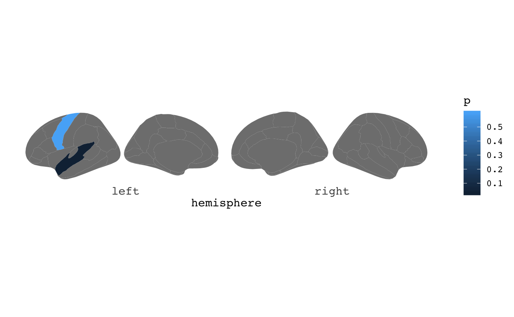
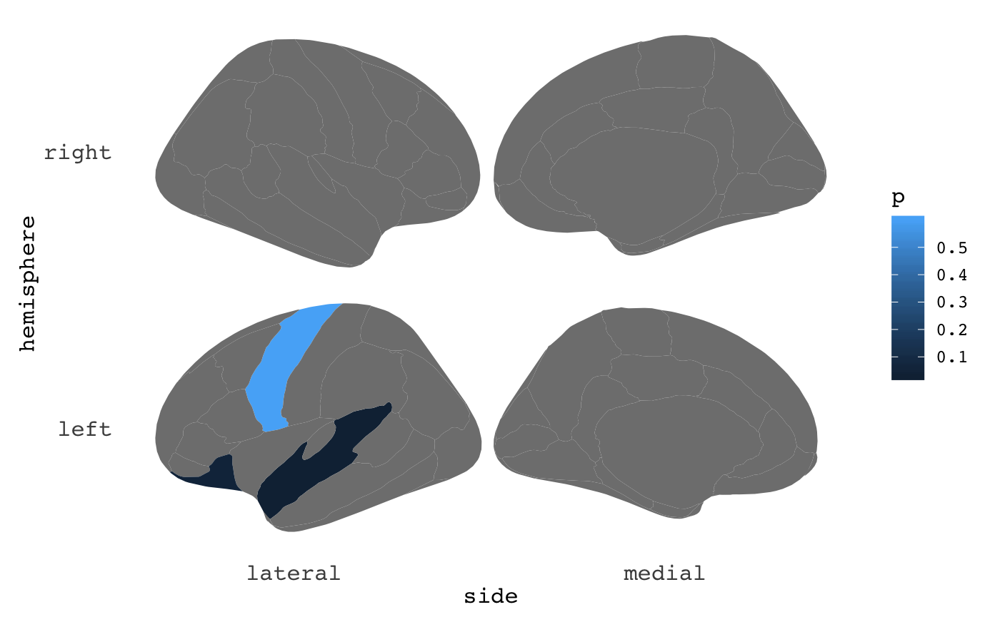
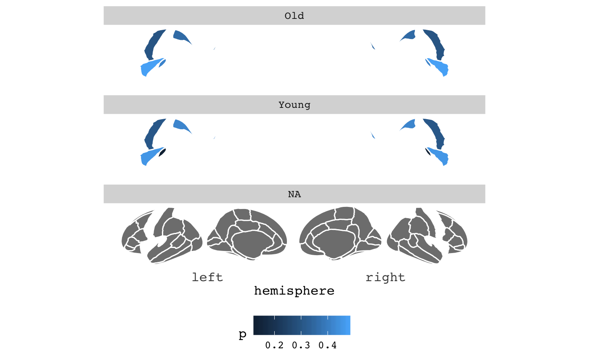
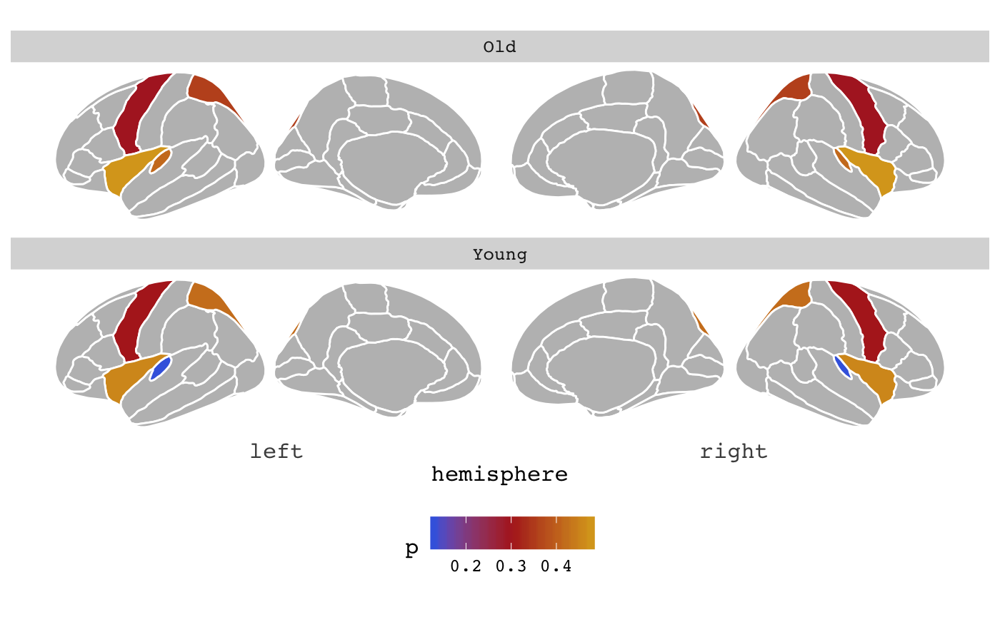
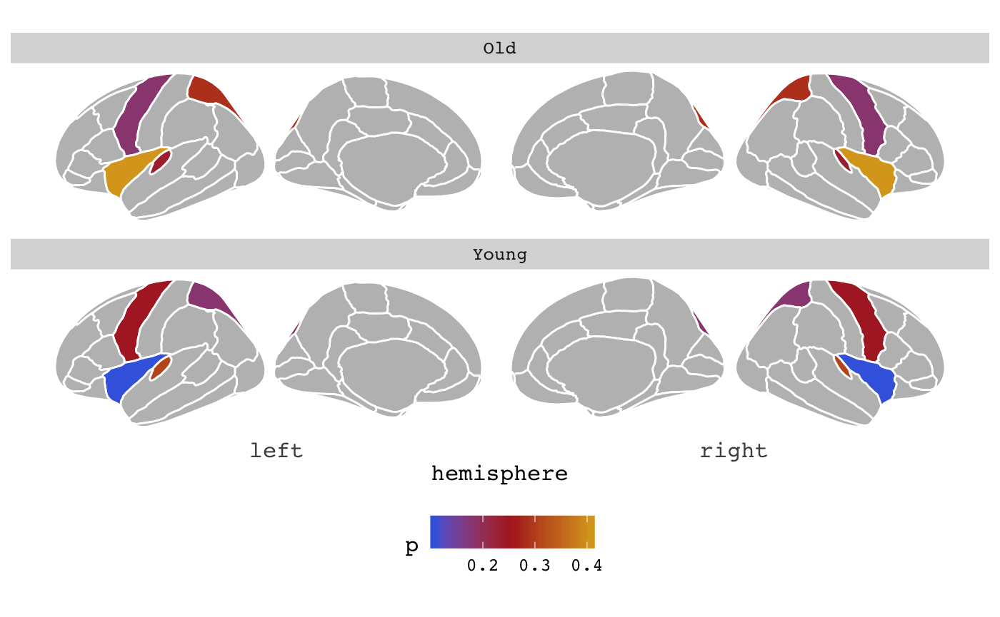

Once you have covered the main functionality in ggseg you will want to use it to plot the results of your data. In order to do this, your data must adhere to certain specifications, so that ggseg can manage to merge your data with the atlas you are using. This means you need to be able to inspect and locate the way the regions you are working with are names in the internal atlas files. This vignette should provide the tools you need to figure these features out, and to manipulate your data to fit these requirements.
There are several ways you can inspect what the data in the atlas looks like. While each atlas has some small differences, they all share six main columns:
1. long - x-axis
2. lat - y-axis
3. area - name of area/network
4. hemi - hemisphere (left or right)
5. side - side of view (medial, lateral, sagittal or axial)
Most atlases also have a label column, which are raw names assigned from the program run to segment/extract data.
This information is stored in a list of data.frames called atlas.info, which is loaded when ggseg is loaded, just like the atlases and palettes.
##
## Attaching package: 'magrittr'## The following objects are masked from 'package:testthat':
##
## equals, is_less_than, not##
## Attaching package: 'dplyr'## The following object is masked from 'package:testthat':
##
## matches## The following objects are masked from 'package:stats':
##
## filter, lag## The following objects are masked from 'package:base':
##
## intersect, setdiff, setequal, union## # A tibble: 80 x 6
## atlas area hemi side label ggseg
## <chr> <chr> <chr> <chr> <chr> <list>
## 1 dkt superior temporal left lateral lh_superiortempo… <tibble [1,494…
## 2 dkt pre central left lateral lh_precentral <tibble [1,314…
## 3 dkt post central left lateral lh_postcentral <tibble [1,164…
## 4 dkt rostral middle fr… left lateral lh_rostralmiddle… <tibble [1,194…
## 5 dkt insula left lateral lh_insula <tibble [870 ×…
## 6 dkt superior parietal left lateral lh_superiorparie… <tibble [480 ×…
## 7 dkt inferior temporal left lateral lh_inferiortempo… <tibble [906 ×…
## 8 dkt lateral occipital left lateral lh_lateraloccipi… <tibble [738 ×…
## 9 dkt lateral orbitofro… left lateral lh_lateralorbito… <tibble [528 ×…
## 10 dkt superior frontal left lateral lh_superiorfront… <tibble [420 ×…
## # … with 70 more rowsHere you can see information about the dkt atlas, and the main attributes of this atlas. If you want to use external data with your ggseg plot, you will need to make sure that your data has at least one column corresponding in name and content with another in the atlas you are using.
For instance, here we make some data for the “default” and “visual” networks in the dkt atlas, and two p values for those two networks.
someData = tibble(area=c("superior temporal","pre central", "lateral orbitofrontal"),
p=c(.03,.6, .05)
)
someData## # A tibble: 3 x 2
## area p
## <chr> <dbl>
## 1 superior temporal 0.03
## 2 pre central 0.6
## 3 lateral orbitofrontal 0.05Notice you we have spelled bothe the column name and the area names exactly as they appear in the data. This is necessary for the merging within the ggseg function to work properly. This merge can be attempted before supplying the data to ggseg to see if there are any errors.
## Joining, by = "area"## # A tibble: 10 x 7
## atlas area hemi side label ggseg p
## <chr> <chr> <chr> <chr> <chr> <list> <dbl>
## 1 dkt superior tempor… left lateral lh_superiortem… <tibble [1,4… 0.03
## 2 dkt pre central left lateral lh_precentral <tibble [1,3… 0.6
## 3 dkt post central left lateral lh_postcentral <tibble [1,1… NA
## 4 dkt rostral middle … left lateral lh_rostralmidd… <tibble [1,1… NA
## 5 dkt insula left lateral lh_insula <tibble [870… NA
## 6 dkt superior pariet… left lateral lh_superiorpar… <tibble [480… NA
## 7 dkt inferior tempor… left lateral lh_inferiortem… <tibble [906… NA
## 8 dkt lateral occipit… left lateral lh_lateralocci… <tibble [738… NA
## 9 dkt lateral orbitof… left lateral lh_lateralorbi… <tibble [528… 0.05
## 10 dkt superior frontal left lateral lh_superiorfro… <tibble [420… NANo errors! Yes, the p column is seemingly full of NAs, but that is just because the top of the data is the somatomotor network, which we did not supply any p values for, so it has been populated with NAs. We can sort the data differently, so we can see the phas been added correctly.
## Joining, by = "area"## # A tibble: 10 x 7
## atlas area hemi side label ggseg p
## <chr> <chr> <chr> <chr> <chr> <list> <dbl>
## 1 dkt superior tempor… left lateral lh_superiortem… <tibble [1,4… 0.03
## 2 dkt superior tempor… right lateral rh_superiortem… <tibble [1,3… 0.03
## 3 dkt lateral orbitof… left lateral lh_lateralorbi… <tibble [528… 0.05
## 4 dkt lateral orbitof… right lateral rh_lateralorbi… <tibble [636… 0.05
## 5 dkt pre central left lateral lh_precentral <tibble [1,3… 0.6
## 6 dkt pre central right lateral rh_precentral <tibble [1,3… 0.6
## 7 dkt post central left lateral lh_postcentral <tibble [1,1… NA
## 8 dkt rostral middle … left lateral lh_rostralmidd… <tibble [1,1… NA
## 9 dkt insula left lateral lh_insula <tibble [870… NA
## 10 dkt superior pariet… left lateral lh_superiorpar… <tibble [480… NAIf you need your data to be matched on several columns, the approach is the same. Add the column you want to match on, with the exact same name, and make sure it’s content matches the content of the same column in the data.
## # A tibble: 3 x 3
## area p hemi
## <chr> <dbl> <chr>
## 1 superior temporal 0.03 left
## 2 pre central 0.6 left
## 3 lateral orbitofrontal 0.05 left## Joining, by = c("area", "hemi")## # A tibble: 10 x 7
## atlas area hemi side label ggseg p
## <chr> <chr> <chr> <chr> <chr> <list> <dbl>
## 1 dkt superior tempor… left lateral lh_superiortem… <tibble [1,4… 0.03
## 2 dkt lateral orbitof… left lateral lh_lateralorbi… <tibble [528… 0.05
## 3 dkt pre central left lateral lh_precentral <tibble [1,3… 0.6
## 4 dkt post central left lateral lh_postcentral <tibble [1,1… NA
## 5 dkt rostral middle … left lateral lh_rostralmidd… <tibble [1,1… NA
## 6 dkt insula left lateral lh_insula <tibble [870… NA
## 7 dkt superior pariet… left lateral lh_superiorpar… <tibble [480… NA
## 8 dkt inferior tempor… left lateral lh_inferiortem… <tibble [906… NA
## 9 dkt lateral occipit… left lateral lh_lateralocci… <tibble [738… NA
## 10 dkt superior frontal left lateral lh_superiorfro… <tibble [420… NANotice how the message now states that it is joining by = c("area", "hemi"). The merge function has recognized that there are two equally named columns, and assumes (in this case correctly) that these are equivalent.
Notice that everything is case-sensitive, so writing Area or Left will not result in matching.
ggseg
When you have managed to create data that merges nicely with the atlas, you can go ahead and supply it to the function.

You can actually also supply it directly as an atlas. For instance, if you had saved the merged data from the previous steps, you can supply this directly to the atlas option.
## Joining, by = c("area", "hemi")
It is this possibility of supplying a custom atlas that gives you particular flexibility, though a little tricky to begin with. Lets do a recap of the unwanted results:
someData = data.frame(
area = rep(c("transverse temporal", "insula",
"pre central","superior parietal"),2),
p = sample(seq(0,.5,.001), 8),
AgeG = c(rep("Young",4), rep("Old",4)),
stringsAsFactors = FALSE)
ggseg(.data=someData, colour="white", mapping=aes(fill=p)) +
facet_wrap(~AgeG, ncol=1) +
theme(legend.position = "bottom")
See how you have three facets, when you only have 2 groups, and that the “background” brain is not printed in your two groups. This is because for ggplot, that is what the data looks like. For this to work, you can supply already grouped data to ggseg, but you must make sure they are grouped by the columns you will use for facetting, or else it will not work.
# If you group_by the columns you will facet by, this will work well.
someData = someData %>%
group_by(AgeG)
# We can now supply the newAtlas as an atlas to ggseg
ggseg(.data = someData, atlas=dkt, colour="white", mapping=aes(fill=p)) +
facet_wrap(~AgeG, ncol=1) +
theme(legend.position = "bottom") +
scale_fill_gradientn(colours = c("royalblue","firebrick","goldenrod"),na.value="grey")
This whole procedure can be piped together, so you dont have to save all the intermediate steps.
someData %>%
group_by(AgeG) %>%
ggseg(atlas=dkt, colour="white", mapping=aes(fill=p)) +
facet_wrap(~AgeG, ncol=1) +
theme(legend.position = "bottom") +
scale_fill_gradientn(colours = c("royalblue","firebrick","goldenrod"),na.value="grey")